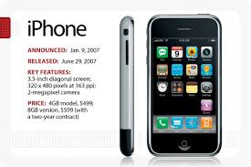
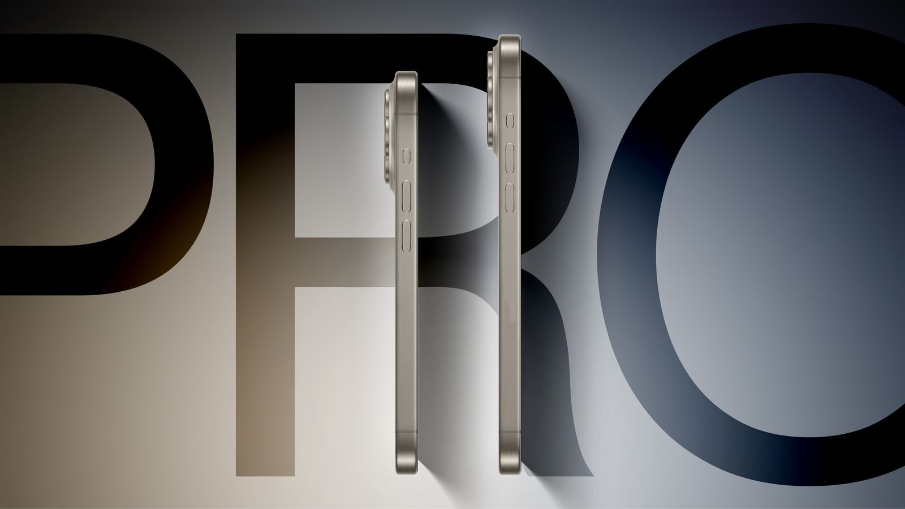
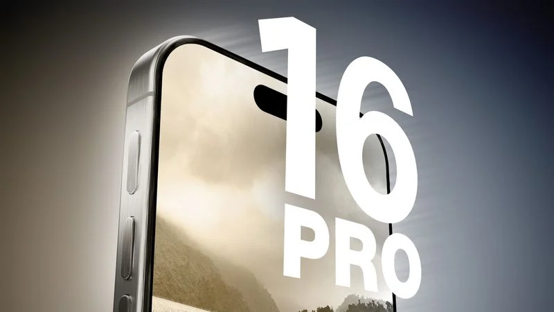

Images of the first iPhone
.jpg)
Steve Jobs cofounded Apple Computer Inc. with Steve Wozniak. Under Jobs’ guidance, the company pioneered a series of revolutionary technologies, including the iPhone and iPad.
Steve Jobs was an American inventor, designer, and entrepreneur who was the cofounder, chief executive, and chairman of Apple Inc. Born in 1955 to two University of Wisconsin graduate students who gave him up for adoption, Jobs was smart but directionless, dropping out of college and experimenting with different pursuits before cofounding Apple with Steve Wozniak in 1976. Jobs left the company in 1985, launching Pixar Animation Studios, then returned to Apple more than a decade later. The tech giant’s revolutionary products, which include the iPhone, iPad, and iPod, have dictated the evolution of modern technology. Jobs died in 2011 following a long battle with pancreatic cancer.
Steve Jobs was born on February 24, 1955, in San Francisco to Joanne Schieble (later Joanne Simpson) and Abdulfattah “John” Jandali, two University of Wisconsin graduate students. The couple gave up their unnamed son for adoption. As an infant, Jobs was adopted by Clara and Paul Jobs and named Steven Paul Jobs. Clara worked as an accountant, and Paul was a Coast Guard veteran and machinist. Jobs’ biological father, Jandali, was a Syrian political science professor. His biological mother, Schieble, worked as a speech therapist. Shortly after Jobs was placed for adoption, his biological parents married and had another child, Mona Simpson. It was not until Jobs was 27 that he was able to uncover information on his biological parents.
A Visionary's Dream: Steve Jobs, the charismatic co-founder of Apple, had a vision for a device that would seamlessly blend the capabilities of a phone, a personal computer, and a portable music player. This vision, nurtured over years, culminated in the creation of the revolutionary iPhone. Jobs' journey toward the iPhone began in the late 1970s when he and Steve Wozniak founded Apple. The company's early success with the Apple II, one of the first personal computers to gain widespread popularity, laid the groundwork for future innovations. The iPhone was a product of its time, drawing inspiration from several technological advancements. The iPod, Apple's groundbreaking digital music player, demonstrated the company's expertise in portable devices. The touchscreen technology pioneered by companies like Palm and the graphical user interface (GUI) popularized by Apple's Macintosh computer provided the foundation for a new kind of user experience.
You can know more about Steve Jobs by clicking this link: Steve Jobs.
On September 9, Apple will introduce the iPhone 16 Pro and the iPhone 16 Pro Max, which will be sold alongside the iPhone 16 and iPhone 16 Plus. The "Pro" models are the more expensive devices in Apple's flagship lineup and are typically the first flagship iPhones to get new designs and features. We're a few months away from the debut of the 2024 iPhones, but as is typical, leakers, analysts, and others with insider information are already sharing details on the new devices.
 